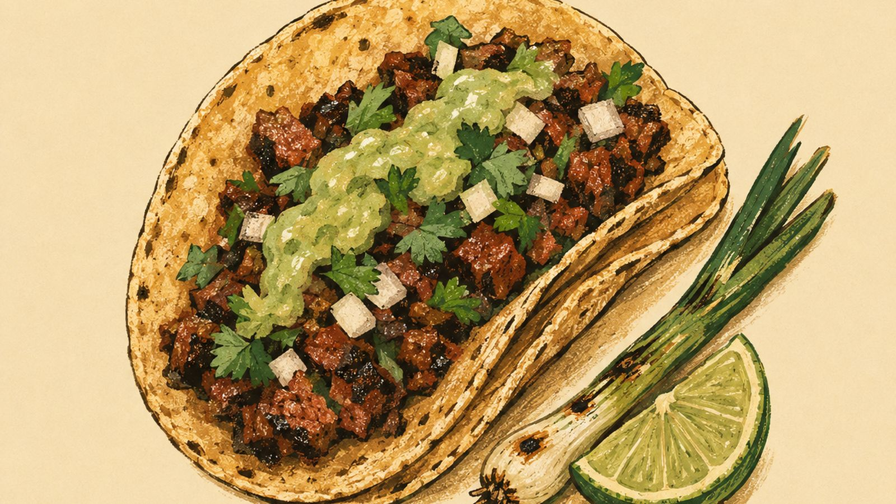

01
Tijuana, Baja California
Venue: Off Avenida Revolución
Taco estilo Tijuana
Time at the table: 1h 00m
Photograph pending

Salt and pepper on top sirloin, chopped fine over charcoal. Two small corn tortillas, never flour. It arrives already dressed, so there is no salsa bar and no decision to make.
Fact
The beef comes up from Ciudad Obregón, Sonora. Sonora raises it, Tijuana changes the wrapper.
Note
I gave my wife a taco tour for Christmas. December 23rd, four hours on foot, and of everything we ate that day this is the one I still think about.